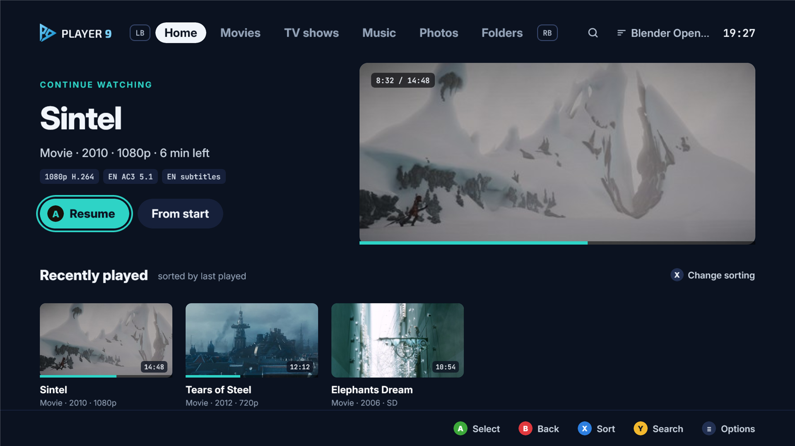
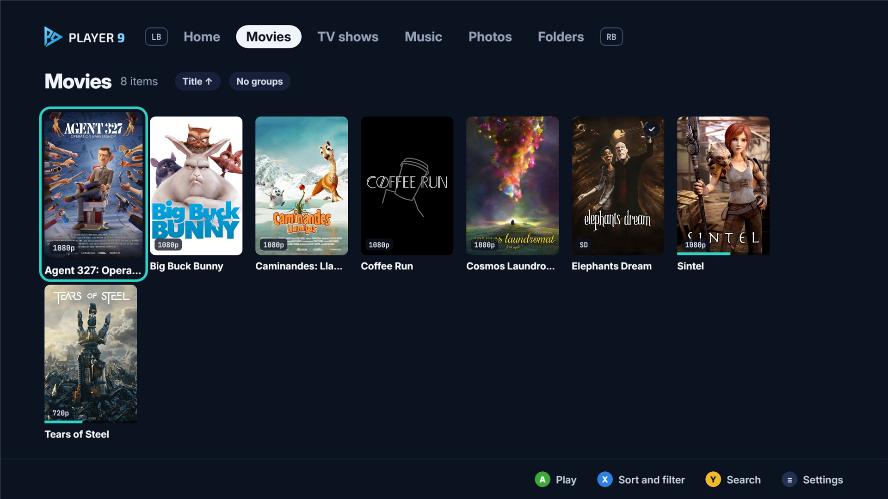
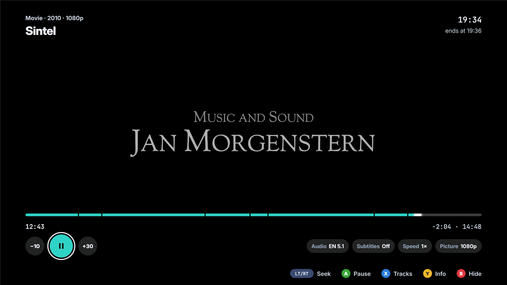
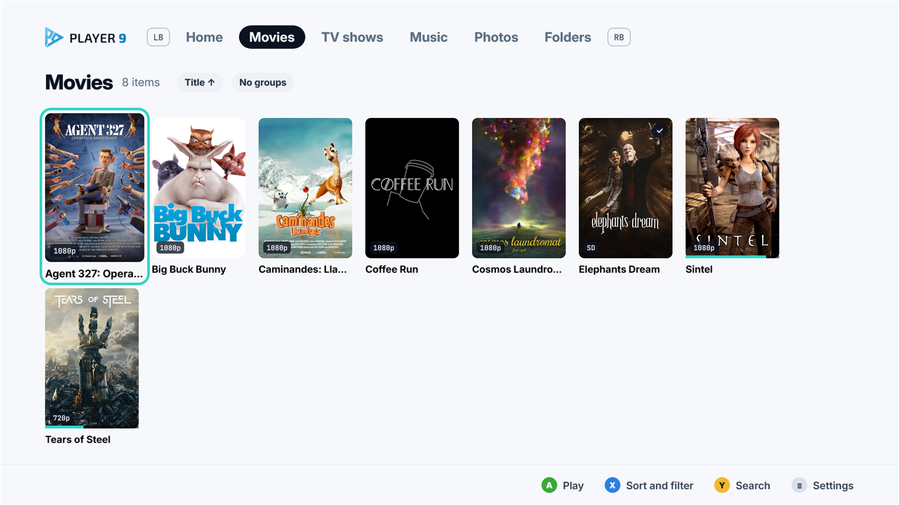

Player 9: domáca filmotéka konečne aj na Xboxe
Kto má filmy, seriály a hudbu na NAS alebo na disku v počítači, na Xboxe doteraz veľa možností nemal. Player 9 sa pripojí priamo k zdieľanému priečinku a knižnicu si zostaví sám.

Aplikácie postavené na serveri Plex alebo Jellyfin chcú, aby ste si server nainštalovali a spravovali. Všeobecné prehrávače zas pôsobia ako správca súborov s tlačidlom Play. Player 9 ide inou cestou: žiadny server, len adresa priečinka a heslo.
Prvé spustenie
Sprievodca sa spýta, kde máte médiá. Na výber je zdieľaný priečinok cez SMB (verzie 1, 2 aj 3, teda Windows aj bežné NAS), DLNA/UPnP server, USB disk, stream alebo IPTV playlist. Zadáte adresu a heslo a aplikácia začne prechádzať priečinky.
Treba mať trochu trpezlivosti. Pri veľkej knižnici na pomalšom NAS trvá prvý prechod niekoľko minút. V našom teste to bolo približne 6 minút pre takmer 900 priečinkov. Ďalšie spustenia už len dopĺňajú zmeny.
Knižnica, ktorá sa stará sama o seba
Na Player 9 je najviac vidieť, čo všetko urobí bez vás. Súbory roztriedi na filmy, seriály, hudbu a fotky. Seriály rozpozná podľa označení ako S01E02 alebo 1x02 v názve, takže epizódy sa zoradia do sérií aj vtedy, keď sú pomenované chaoticky.
Obaly berie z priečinkov. Keď tam nie sú, stiahne ich z internetu: hudbu z MusicBrainz a Deezer, filmy a seriály z TMDB. Pri TMDB však musíte zadať vlastný bezplatný kľúč, čo bežného používateľa môže odradiť.
Domovská obrazovka ponúka Pokračovať v sledovaní a po skončení epizódy sa sama spustí ďalšia. Pri seriáloch je to presne to, čo od takej aplikácie chcete.

Prehrávanie
Prehrávanie zabezpečuje libVLC, takže s formátmi nie je problém: MKV, MP4, AVI, HEVC, H.264, DTS, AC3, FLAC. Rozbehli sa nám aj staré XviD súbory zo začiatku tisícročia.
Externé titulky .srt aplikácia nájde vedľa filmu aj v podpriečinku Subs a české a slovenské kódovanie rozpozná automaticky. Rozsypaný čaj namiesto diakritiky sme nevideli ani raz. Zvukovú stopu a titulky prepnete počas prehrávania a pri pretáčaní sa zobrazuje náhľad snímky.
Celá aplikácia je navrhnutá pre ovládač a televízor. Mriežky sa ovládajú D-padom, tlačidlo B vracia späť a farebné nápovede ukazujú, čo robí ktoré tlačidlo. Ani pri knižnici s vyše 800 filmami mriežka neseká.


Dizajn a jazyky
Vzhľad je čistý a tmavomodrý, so svetlým režimom a desiatimi farbami zvýraznenia. K dispozícii je 15 jazykov vrátane slovenčiny a češtiny, čo je pri aplikáciách pre Xbox stále zriedkavosť. Slovenská a česká verzia pôsobí prirodzene, kým pri ázijských jazykoch občas cítiť strojový preklad.
Súkromie
Knižnica, heslá aj nastavenia ostávajú v konzole. Aplikácia nemá účty, reklamy ani sledovanie. Na internet sa pripája, len keď sťahuje obaly.
Kde to škrípe
- Rozmazané titulky pri SD videu. Pri starších súboroch s nízkym rozlíšením sa titulky vykreslia v rozlíšení videa a potom zväčšia. Pri 720p a vyššom rozlíšení sú ostré.
- Spiaci NAS. Ak sa disk musí najprv roztočiť, prvé otvorenie súboru trvá aj 10 sekúnd.
- TMDB vyžaduje vlastný kľúč. Bez neho ostanú filmy bez obalov z internetu, pokiaľ ich nemáte v priečinkoch.
Verdikt
Player 9 nesľubuje všetko ako mediálne centrá so serverom, ale svoju úlohu robí dobre. Pripojíte NAS, chvíľu počkáte a máte usporiadanú filmotéku s obalmi, pokračovaním v sledovaní a titulkami, ktoré zobrazia slovenčinu správne. Kto nechce udržiavať server a chce len pustiť film z disku v počítači, lepšiu voľbu na Xboxe zatiaľ nenájde.
APáči sa nám
- netreba žiadny server
- správne triedenie seriálov
- slovenčina a české/slovenské titulky bez problémov
- súkromie bez účtov a reklám
- široká podpora formátov
BPrekáža nám
- rozmazané titulky pri SD videu
- pomalý štart zo spiaceho NAS
- TMDB vyžaduje vlastný kľúč